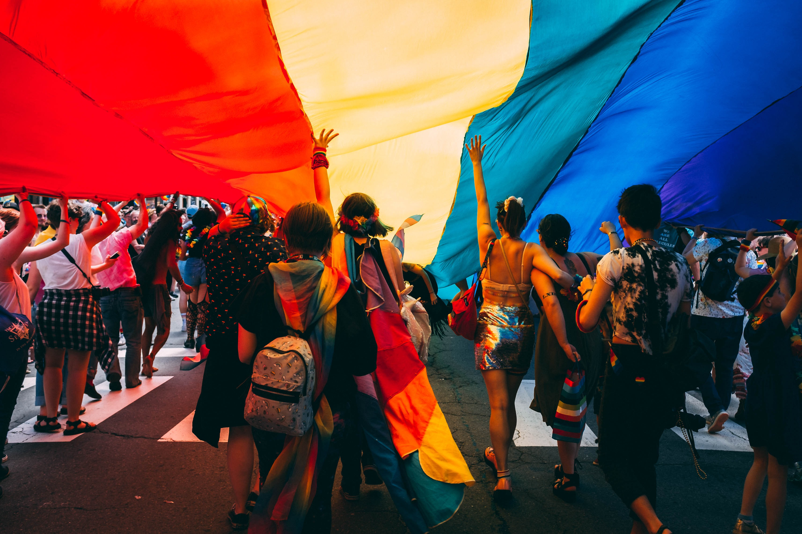
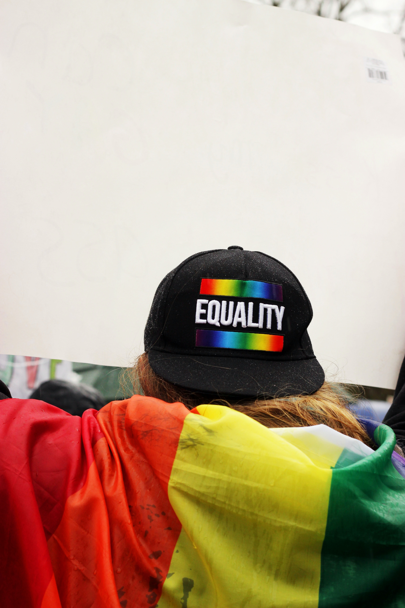

Simpl for LGBTQIA+
 People who are lesbian, gay, bisexual, or transgender (LGBT) are members of every community. Unlike what the common perception is, they are diverse, come from all walks of life, and include people of all races and ethnicities, all ages, all socioeconomic statuses, and from all parts of the country. The perspectives and needs of LGBT people should be routinely considered in public health efforts to improve the overall health of every person and eliminate health disparities. This is the only way the overal health of the society can be improved while making sure no one is left out of the equation.
Historically, the people of the LGBTQIA+ society have been regularly ostracized and subjected to numerous punishments for their existence. Only recently has the world been able to truly grasp the concept of alternative sexualities and gender identities. However, we as a society are far from perfect. There is a lot of unlearning that the society needs to do as a whole to make the world a better and inclusive space for everyone, where no one has to live in fear of being subjected to punishments and judgements just because of the way they are. This website can prove to be an amazing source of information to help you in learning more about the LGBTQIA+.